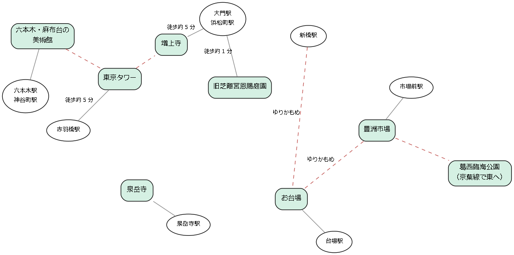

8. 港区・湾岸
このエリアは、東京タワーのある芝・麻布・六本木の一帯と、東京湾の埋め立て地に広がる湾岸の街からなる。芝には徳川将軍家の菩提寺である増上寺や大名庭園が残り、六本木と麻布台には現代美術の美術館が集まる。湾岸には、幕末の砲台の跡であるお台場、東京の新しい台所である豊洲市場、海辺の大きな公園である葛西臨海公園があり、江戸から現代までの東京と海とのかかわりをたどれる。

図: 港区・湾岸の名所の位置関係（模式図）
8.1. 東京タワー
1958 年に完成した高さ 333 m の電波塔で、戦後の東京の復興の象徴である。東京スカイツリーの開業後も、オレンジと白に塗り分けられた姿は東京の代表的な景色であり続けている。
見どころ
メインデッキ（150 m）：2 層の展望台で、東京の中心部を間近に見下ろせる。床の一部がガラス張りになっており、真下をのぞける。
トップデッキ（250 m）：予約制のツアーで上る展望台で、より高い位置から東京を一望できる。
外階段：決められた日には、メインデッキまでの約 600 段の外階段を歩いて上ることができる。
ライトアップ：夜には塔全体がオレンジ色の光で照らされる。季節や催しに合わせて特別なライトアップが行われることもある。
歴史・由来
東京タワーは、各放送局の電波塔を 1 つにまとめる目的で建設された。設計には、耐震構造の研究で知られる建築構造学者の内藤多仲が関わった。完成した当時は世界で最も高い自立式の鉄塔であった。塔の色は、航空機の安全のための法令の規定に基づいている。
楽しみ方のこつ
塔を眺めるなら、足元の芝公園や増上寺の境内、六本木の展望施設などが人気の場所である。展望台に上るなら、夕方から夜にかけての時間帯が夜景を楽しめる。
最寄り駅 |
都営大江戸線の赤羽橋駅から徒歩約 5 分、東京メトロ日比谷線の神谷町駅から徒歩約 7 分、都営三田線の御成門駅から徒歩約 6 分 |
|---|---|
料金 |
有料（展望台） |
予約 |
メインデッキは不要、トップデッキは必要 |
所要時間の目安 |
1〜1.5 時間 |
公式サイト |
併せて訪れたい名所
東隣に増上寺がある。
8.2. 増上寺
徳川将軍家の菩提寺の一つで、6 人の将軍が眠る浄土宗の大本山である。境内から見上げる東京タワーとの組み合わせは、古さと新しさが同居する東京らしい景色である。
見どころ
三解脱門：1622 年に建てられた朱塗りの門で、重要文化財である。東日本最大級の木造の門で、戦災を免れて江戸時代の姿を伝えている。門をくぐると、むさぼり、いかり、おろかさの 3 つの煩悩から解き放たれるとされる。
徳川将軍家墓所：2 代秀忠、6 代家宣、7 代家継、9 代家重、12 代家慶、14 代家茂の 6 人の将軍と、その正室や側室が眠る（有料で公開）。
宝物展示室：2 代将軍の秀忠の霊廟の大型の模型などを展示している（有料）。この模型は、20 世紀の初めにイギリスの王室に贈られ、100 年以上を経て日本に戻ってきたものである。
歴史・由来
増上寺は 1393 年に開かれた寺で、徳川家康の江戸入城後、徳川家の菩提寺に定められた。1598 年に現在の地に移り、寛永寺とともに将軍家の菩提寺として栄えた。かつては広大な境内に多くの霊廟が建っていたが、その多くは戦災で失われ、現在の大殿は 1974 年に再建されたものである。
楽しみ方のこつ
東京タワーと大殿を一緒に写真に収めるなら、三解脱門から大殿へ向かう境内が適している。夜にはライトアップされた東京タワーを背景に、大殿の姿が浮かび上がる。
最寄り駅 |
都営三田線の御成門駅・芝公園駅から徒歩約 3 分、都営浅草線・大江戸線の大門駅から徒歩約 5 分、JR 浜松町駅から徒歩約 10 分 |
|---|---|
料金 |
無料（墓所と宝物展示室は有料） |
予約 |
不要 |
所要時間の目安 |
30 分〜1 時間 |
公式サイト |
併せて訪れたい名所
8.3. 旧芝離宮恩賜庭園
江戸時代の初期の大名庭園の一つで、浜松町駅のすぐそばにある。池を中心とした回遊式庭園で、国の名勝に指定されている。
見どころ
泉水と中島：庭園の中心となる池で、かつては海水を引き入れた潮入の池であった。現在は淡水の池となっている。
西湖の堤：中国の西湖の堤を模した石造りの堤である。
大山：庭園で最も高い築山で、頂上から池の全景を見渡せる。
石柱：池のほとりに立つ 4 本の石の柱で、戦国時代の小田原の武将の屋敷の門柱を運んだものと伝えられる。
歴史・由来
1678 年に老中の大久保忠朝が屋敷を構え、庭園を造った。当時の庭は「楽寿園」と呼ばれた。その後、所有者が何度か替わり、明治時代には皇室の離宮となった。1924 年に東京市に下賜され、一般に公開された。
楽しみ方のこつ
浜離宮恩賜庭園よりも規模が小さく、30 分ほどで一周できる。駅から近く、乗り換えの合間などに気軽に立ち寄れる。周囲の高層ビルと庭園の対比も見どころである。
最寄り駅 |
JR 浜松町駅（北口）から徒歩約 1 分、都営浅草線・大江戸線の大門駅から徒歩約 3 分 |
|---|---|
料金 |
有料 |
予約 |
不要 |
所要時間の目安 |
30 分〜1 時間 |
公式サイト |
併せて訪れたい名所
北へ 15〜20 分ほど歩くと浜離宮恩賜庭園がある。
8.4. 六本木・麻布台の美術館
六本木と麻布台には、個性の異なる美術館が歩いて回れる範囲に集まっている。現代美術を中心とした企画展が多く、高層ビルの展望施設と組み合わせて楽しめる。
見どころ
施設 |
特徴 |
|---|---|
国立新美術館 |
収蔵品を持たず、企画展と美術団体の公募展を開く美術館である。黒川紀章が設計した、波打つガラスの外壁が特徴である。 |
森美術館 |
六本木ヒルズの森タワーの最上部にある現代美術の美術館である。同じ階の展望台「東京シティビュー」と併せて楽しめる。 |
サントリー美術館 |
東京ミッドタウンの中にある美術館で、日本の古美術と工芸を中心に展示する。 |
麻布台ヒルズの美術施設 |
2023 年に開業した麻布台ヒルズには、企画展を開くギャラリーや、デジタル技術を使った体験型の美術館がある。 |
歴史・由来
2003 年の六本木ヒルズの開業と、2007 年の国立新美術館と東京ミッドタウンの開業によって、六本木は美術の街として知られるようになった。2023 年には麻布台ヒルズが開業し、美術施設がさらに増えた。
楽しみ方のこつ
各館の企画展は会期が決まっているため、出かける前に公式サイトで展覧会の内容と会期を確認する。森美術館など夜遅くまで開館している館もあり、仕事帰りに立ち寄れる。人気の展覧会は日時指定の予約制となることがある。
最寄り駅 |
東京メトロ日比谷線・都営大江戸線の六本木駅、東京メトロ千代田線の乃木坂駅（国立新美術館に直結）、東京メトロ日比谷線の神谷町駅（麻布台ヒルズ） |
|---|---|
料金 |
有料（展覧会によって異なる） |
予約 |
展覧会による |
所要時間の目安 |
1 館あたり 1〜2 時間 |
公式サイト |
併せて訪れたい名所
麻布台ヒルズから南東に歩けば東京タワーに至る。
8.5. 泉岳寺
赤穂藩主の浅野内匠頭（浅野長矩）と、主君の仇を討った赤穂義士（赤穂浪士）の墓がある曹洞宗の寺である。「忠臣蔵」の物語の舞台として、今も多くの人が墓に線香を手向ける。
見どころ
赤穂義士の墓：浅野内匠頭とその夫人の墓の隣に、大石内蔵助をはじめとする義士の墓が並ぶ。墓前には線香の煙が絶えない。
首洗い井戸：討ち入りのあと、義士たちが吉良上野介の首を洗い、主君の墓前に供えたと伝えられる井戸である。
赤穂義士記念館：義士の遺品や討ち入りの資料を展示している（有料）。
山門と大石内蔵助の像：山門をくぐると、討ち入りの総大将である大石内蔵助の像が出迎える。
歴史・由来
泉岳寺は 1612 年に徳川家康が外桜田に創建した寺で、1641 年の大火で焼失したあと、現在の地に再建された。浅野家の菩提寺であったことから、元禄 14 年（1701 年）に江戸城中で刃傷事件を起こして切腹した浅野内匠頭がここに葬られた。翌年の元禄 15 年 12 月 14 日（1703 年 1 月 30 日）に吉良邸に討ち入った義士たちは、主君の墓前に仇討ちを報告し、のちに切腹して同じ地に葬られた。
楽しみ方のこつ
討ち入りの日にちなんで、毎年 12 月 14 日には「義士祭」が開かれ、大変ににぎわう。春にも義士祭が開かれる。
最寄り駅 |
都営浅草線・京急線の泉岳寺駅から徒歩約 3 分 |
|---|---|
料金 |
無料（赤穂義士記念館は有料） |
予約 |
不要 |
所要時間の目安 |
30 分〜1 時間 |
公式サイト |
併せて訪れたい名所
8.6. お台場
東京湾の埋め立て地に広がる、海辺の公園と商業施設、博物館の街である。その名は、幕末に江戸を守るために築かれた砲台「台場」に由来する。
見どころ
台場公園（第三台場）：幕末に築かれた砲台の跡が公園として残り、陸続きで歩いて入れる。石垣で囲まれた中に、砲台や火薬庫の跡がある。国の史跡である。
お台場海浜公園：人工の砂浜が広がる公園で、レインボーブリッジを正面に望む。夜景の名所としても知られる。
レインボーブリッジ：芝浦とお台場を結ぶ吊り橋で、橋の両側に歩道（レインボープロムナード）があり、歩いて渡れる。
日本科学未来館：最先端の科学技術を体験的に学べる科学館である。
歴史・由来
1853 年にペリーの艦隊が浦賀に来航したことを受け、江戸幕府は江戸湾の守りを固めるため、品川の沖に砲台を築いた。これが「品川台場」で、幕府への敬意を込めて「お台場」と呼ばれた。現在は第三台場と第六台場の 2 基が残り、国の史跡に指定されている。周辺の埋め立て地は、1990 年代以降、臨海副都心として開発された。
楽しみ方のこつ
新橋駅からゆりかもめに乗ると、レインボーブリッジを渡る際に車窓から東京湾を見渡せる。浅草や日の出桟橋からは水上バスでも行ける。夕暮れの海浜公園から眺めるレインボーブリッジと都心の夜景は格別である。
最寄り駅 |
ゆりかもめのお台場海浜公園駅・台場駅、りんかい線の東京テレポート駅 |
|---|---|
料金 |
無料（博物館などは有料） |
予約 |
不要 |
所要時間の目安 |
2〜4 時間 |
公式サイト |
併せて訪れたい名所
8.7. 豊洲市場
2018 年に築地市場から移転して開場した、東京都の中央卸売市場である。見学者用の通路から、水産物の卸売場や仲卸売場の様子を見学できる。
見どころ
見学者通路：卸売場や仲卸売場の 2 階に設けられた通路で、ガラス越しに市場の様子を見下ろせる。予約は不要である。
マグロのせりの見学デッキ：早朝のマグロのせりを間近で見られるデッキで、見学には事前の申し込み（抽選）が必要である。
屋上緑化広場：水産仲卸売場棟の屋上にある芝生の広場で、東京湾やレインボーブリッジを眺められる。
市場の飲食店：市場の中には、すしや海鮮丼などの飲食店が集まっている。
歴史・由来
東京の中央卸売市場は、1935 年から築地にあったが、施設の老朽化などのため、2018 年に豊洲に移転した。市場の隣には、江戸の町並みを再現した商業施設が 2024 年に開業している。
楽しみ方のこつ
市場の取引は早朝に行われるため、活気のある様子を見るなら朝の早い時間に出かける。日曜日、祝日、休市日（多くの水曜日）は見学できないため、市場の開場日のカレンダーを事前に確認する。市場は働く人の仕事場であるため、見学者通路の外に出たり、作業の邪魔をしたりしてはならない。
最寄り駅 |
ゆりかもめの市場前駅からすぐ |
|---|---|
料金 |
無料（飲食は有料） |
予約 |
不要（マグロのせりの見学デッキは事前の申し込みが必要） |
所要時間の目安 |
1〜2 時間 |
公式サイト |
併せて訪れたい名所
8.8. 葛西臨海公園
東京湾に面した広さ約 80 ha の公園で、水族園、大観覧車、鳥類園、人工の渚がある。海と空の広がりを感じられる、都内では数少ない場所である。
見どころ
葛西臨海水族園：ガラスのドームが目印の水族園で、大きな水槽の中をマグロの群れが回遊する様子が見どころである。
ダイヤと花の大観覧車：高さ 117 m の観覧車で、東京湾や都心の高層ビル、天気の良い日には富士山も見渡せる。
鳥類園：池や干潟が整備され、水辺の野鳥を観察できる。
西なぎさ：橋を渡った先にある人工の渚（葛西海浜公園）で、砂浜を散歩できる。遊泳は原則としてできないが、夏には水遊びができる催しが開かれることがある。
歴史・由来
葛西の沖の埋め立て地に、1989 年に開園した。水族園も同じ年に開館した。現在、水族園の北側で新しい水族園の建設が進められており、2028 年 3 月に開館する予定である。現在の水族園の建物は、新しい水族園の開館後も保存される計画である。
楽しみ方のこつ
公園の入園は無料で、水族園と観覧車は有料である。春の菜の花、冬のスイセンなど、季節の花も楽しめる。海辺は風が強い日が多いため、上着を用意して出かけたい。
最寄り駅 |
JR 京葉線の葛西臨海公園駅からすぐ |
|---|---|
料金 |
無料（水族園と観覧車は有料） |
予約 |
不要 |
所要時間の目安 |
2〜4 時間 |
公式サイト |
併せて訪れたい名所
京葉線で西に向かい、新木場駅でりんかい線に乗り換えればお台場に行ける。